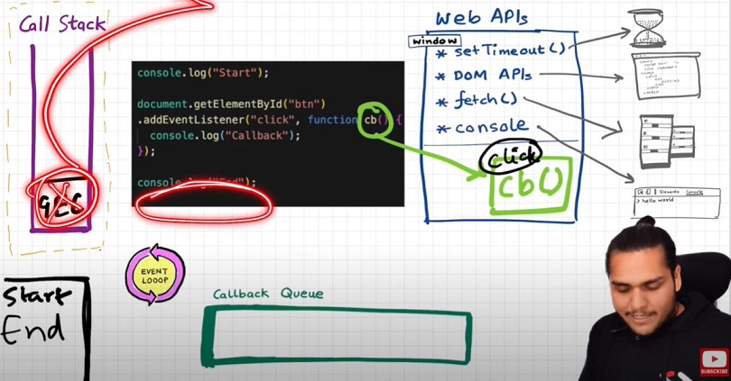
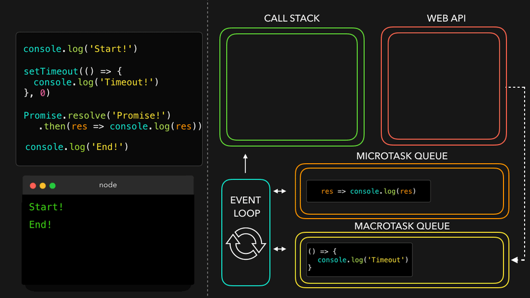
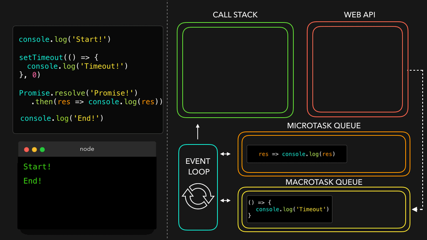

Namaste JavaScript
Episode 1 : Execution Context
জাভাস্ক্রিপ্টে সব কিছু Execution Context এর ভিতরে ঘটে। কল্পনা করো একটি সিল করা কন্টেইনার, যার ভিতরে JS রান করে। এটি একটি বিমূর্ত ধারণা যা বর্তমান কোড যে পরিবেশে চলছে তার তথ্য ধরে রাখে। 
এই কন্টেইনারে প্রথম উপাদানটি হল মেমোরি কম্পোনেন্ট এবং দ্বিতীয়টি কোড কম্পোনেন্ট
মেমোরি কম্পোনেন্টে সব ভেরিয়েবল এবং ফাংশন key-value আকারে থাকে। এটিকে Variable Environment ও বলা হয়।
কোড কম্পোনেন্ট এমন একটি জায়গা যেখানে কোড এক লাইনে এক্সিকিউট হয়। এটিকে Thread of Execution ও বলা হয়।
JS একটি synchronous, single-threaded ভাষা।
- Synchronous:- নির্দিষ্ট অনুক্রমে একটির পর একটি চলে।
- Single-threaded:- এক সময়ে একটি কমান্ড চলে।
লাইভ দেখুন ইউটিউবে নিচে:

Episode 2 : How JS is executed & Call Stack
যখন একটি JS প্রোগ্রাম চালানো হয়, তখন একটি Global Execution Context তৈরি হয়।
Execution Context দুটি ধাপে তৈরি হয়।
- Memory creation phase - JS ভেরিয়েবল এবং ফাংশন গুলোর জন্য মেমোরি বরাদ্দ করে।
- Code execution phase
নিচের উদাহরণটি এবং এর এক্সিকিউশন ধাপগুলি বিবেচনা করি:
var n = 2;
function square(num) {
var ans = num * num;
return ans;
}
var square2 = square(n);
var square4 = square(4);
প্রথমে JS Memory Creation Phase চালায়। প্রথম লাইনে 'n' এর জন্য মেমোরি বরাদ্দ করে এবং 'undefined' রাখে। তারপর ফাংশনের জন্য পুরো কোড মেমোরিতে রাখে। একইভাবে 'square2' এবং 'square4' এর জন্যও মেমোরি বরাদ্দ করে এবং তাতে 'undefined' রাখা হয়।

এরপর Code Execution Phase এ যায়, যেখানে প্রতিটি লাইন এক্সিকিউট হয়।
যখন square(n) কল করা হয়, তখন একটি নতুন Execution Context তৈরি হয়। সেখানে আবার মেমোরি ফেজে num ও ans এর জন্য undefined রাখা হয়। পরবর্তীতে তাদের মান নির্ধারণ হয়। তারপর return এর মাধ্যমে নিয়ন্ত্রণ আগের জায়গায় ফিরে যায়।

return হলে function execution context মুছে যায়। square4 এর ক্ষেত্রেও একই প্রক্রিয়া চলে। সব শেষে Global Execution Context মুছে যায়।

Javascript Call Stack এর মাধ্যমে Execution Context তৈরি ও মুছে ফেলার কাজ করে।
Call Stack একাধিক function call এর ট্র্যাক রাখে।
Call Stack Execution Context গুলোর অনুক্রম ধরে রাখে। একে Program Stack, Control Stack, Runtime Stack, Machine Stack, Execution Context Stack ইত্যাদি বলা হয়।
লাইভ দেখুন ইউটিউবে নিচে:

Episode 3 : Hoisting in JavaScript (variables & functions)
- নিচের কোডটি এবং এর ব্যাখ্যা লক্ষ্য করো:
getName();
console.log(x);
var x = 7;
function getName() {
console.log("Namaste Javascript");
}
অন্যান্য অনেক প্রোগ্রামিং ভাষায় এটি সরাসরি একটি ভুল (error) হতো, কারণ কোনো কিছুকে তৈরি (define) করার আগেই এক্সেস করা সাধারণত সম্ভব নয়। কিন্তু JavaScript-এ, আমরা জানি যে মেমোরি তৈরি হওয়ার ধাপে (memory creation phase) এটি ভ্যারিয়েবলকে `undefined` দিয়ে ইনিশিয়ালাইজ করে এবং ফাংশনের কনটেন্ট মেমোরিতে রেখে দেয়। এরপর এক্সিকিউশন ধাপে যেটা বলা হয় সেটাই চালানো হয়। এখানে যেহেতু কোডটি লাইন বাই লাইন চলে এবং কম্পাইল করে নয়, তাই এটি `undefined` প্রিন্ট করবে এবং কোনো ত্রুটি দিবে না। তবে যদি `var x = 7;` লাইনটি সরিয়ে দেওয়া হয়, তাহলে এটি `Uncaught ReferenceError: x is not defined` এরর দিবে।
Hoisting একটি ধারণা যা আমাদেরকে ভ্যারিয়েবল এবং ফাংশনের মান তাদের ইনিশিয়ালাইজ বা অ্যাসাইন করার আগেই বের করে আনার সুযোগ দেয় এবং এটি সম্ভব হয় Execution Context-এর প্রথম ধাপ (memory creation phase) এর কারণে।
আগের লেকচারে আমরা দেখেছি যে Execution Context দুইটি ধাপে তৈরি হয়, তাই কোড এক্সিকিউশন হওয়ার আগেই মেমোরি তৈরি হয়। ভ্যারিয়েবলের ক্ষেত্রে এটি `undefined` দিয়ে ইনিশিয়ালাইজ হয়, আর ফাংশনের ক্ষেত্রে পুরো ফাংশন কোডটি মেমোরিতে রাখা হয়। উদাহরণস্বরূপ:
getName();
console.log(x);
console.log(getName);
function getName() {
console.log("Namaste JavaScript");
}
- এখন চলো একটু ভিন্ন একটি উদাহরণ দেখি এবং এর আউটপুট বোঝার চেষ্টা করি।
getName();
console.log(getName);
var getName = function () {
console.log("Namaste JavaScript");
};
লাইভ দেখো ইউটিউবে নিচের লিংক থেকে:

Episode 4 : Functions and Variable Environments
var x = 1;
a();
b();
console.log(x);
function a() {
var x = 10;
console.log(x);
}
function b() {
var x = 100;
console.log(x);
}
আউটপুটঃ
10
100
1
Execution Context অনুযায়ী কোডের প্রবাহ
- গ্লোবাল এক্সিকিউশন কনটেক্সট (GEC) তৈরি হয় (একটি বড় বাক্স, যার মধ্যে মেমোরি ও কোড অংশ থাকে)। একই সাথে GEC কল স্ট্যাকে ঢুকে যায়।
Call Stack : GEC
GEC-এর প্রথম ধাপে (মেমোরি ফেজে), ভ্যারিয়েবল x: undefined হয় এবং a ও b ফাংশনগুলোর পুরো কোড মেমোরিতে রাখা হয়।
GEC-এর দ্বিতীয় ধাপে (এক্সিকিউশন ফেজে), যখন ফাংশন কল হয়, তখন একটি নতুন লোকাল এক্সিকিউশন কনটেক্সট তৈরি হয়। প্রথমে x = 1 গ্লোবাল x-এ অ্যাসাইন হয়, তারপর a() কল হয়, তাই GEC-এর কোড অংশে একটি লোকাল EC তৈরি হয়।
Call Stack: [GEC, a()]
- a() এর লোকাল EC-তে একটি আলাদা x তৈরি হয় যা প্রথমে undefined এবং পরে 10 অ্যাসাইন হয়ে কনসোলে প্রিন্ট হয়। তারপর কোড শেষ হলে a() এর EC কল স্ট্যাক এবং GEC থেকে মুছে যায়।
Call Stack: GEC
- এরপর কার্সর b() ফাংশন কলে যায়। একই ধাপ আবার হয়।
Call Stack :[GEC, b()] → GEC (console.log-এ 100 প্রিন্ট হওয়ার পর আবার GEC এ ফিরে আসে)

লাইভ দেখো ইউটিউবে নিচের লিংক থেকে:

Episode 5 : Shortest JS Program, window & this keyword
সবচেয়ে ছোট JS প্রোগ্রাম হলো খালি একটি ফাইল। কারণ এমনকি তখনও JS ইঞ্জিন অনেক কিছু করে। আগের মতোই, এখানে GEC তৈরি হয়, যার মধ্যে মেমোরি স্পেস ও এক্সিকিউশন কনটেক্সট থাকে।
JS ইঞ্জিন একটি জিনিস তৈরি করে যাকে বলা হয় 'window'। এটি একটি অবজেক্ট যা গ্লোবাল স্কোপে তৈরি হয়। এতে অনেক ফাংশন ও ভ্যারিয়েবল থাকে যা প্রোগ্রামের যেকোনো জায়গা থেকে অ্যাক্সেস করা যায়। JS ইঞ্জিন একটি this কিওয়ার্ডও তৈরি করে, যা গ্লোবাল লেভেলে window object-এর দিকে ইঙ্গিত করে। তাই সংক্ষেপে বললে, GEC ছাড়াও একটি গ্লোবাল অবজেক্ট (window) এবং একটি this ভ্যারিয়েবল তৈরি হয়।
ভিন্ন JS ইঞ্জিনে গ্লোবাল অবজেক্টের নাম আলাদা হয়। যেমন ব্রাউজারে এটি window, আর Node.js-এ অন্য কিছু। গ্লোবাল লেভেলে, this === window হয়।
যদি আমরা গ্লোবাল স্কোপে কোনো ভ্যারিয়েবল তৈরি করি, তবে তা গ্লোবাল অবজেক্টের সাথে যুক্ত হয়ে যায়।
উদাহরণ (eg):
var x = 10;
console.log(x);
console.log(this.x);
console.log(window.x);
নিচে ইউটিউবে লাইভ দেখো:

Episode 6 : undefined vs not defined in JS
প্রথম ধাপে (মেমোরি বরাদ্দ) JS প্রতিটি ভ্যারিয়েবলকে একটি প্লেসহোল্ডার হিসেবে undefined মান দিয়ে ইনিশিয়ালাইজ করে।
undefined তখন হয় যখন ভ্যারিয়েল্ড ভ্যারিয়েবল ডিক্লেয়ার করা হয় কিন্তু তাতে কোনো মান দেওয়া হয়নি।
যদি কোনো অবজেক্ট বা ভ্যারিয়েবল মেমোরি বরাদ্দ পর্যায়ে ডিক্লেয়ার না করা থাকে এবং এক্সেস করার চেষ্টা করা হয়, তবে সেটি Not defined হবে।
Not Defined ≠ Undefined
যখন ভ্যারিয়েবলটি ডিক্লেয়ার করা হয় কিন্তু মান দেওয়া হয়নি, তখন তার বর্তমান মান হয় undefined। কিন্তু যখন ভ্যারিয়েবলটি ডিক্লেয়ার করা হয় না, তবুও এটি কোডে কল করা হয়, তখন সেটি হয় not defined।
console.log(x);
var x = 25;
console.log(x);
console.log(a);
- JS একটি loosely typed / weakly typed ভাষা। এটি ভ্যারিয়েবলগুলিকে কোনো নির্দিষ্ট ডেটাটাইপের সাথে আবদ্ধ করে না। আমরা যেমন বলতে পারি var a = 5, পরে সেটি boolean এ পরিবর্তন করতে পারি যেমন a = true বা string এ যেমন a = 'hello'।
- কখনো নিজে থেকে কোনো ভ্যারিয়েবলে undefined অ্যাসাইন করো না। এটি নিজ থেকেই ঘটতে দাও।
নিচে ইউটিউবে লাইভ দেখো:

Episode 7 : The Scope Chain, Scope & Lexical Environment
function a() {
console.log(b);
}
var b = 10;
a();
function a() {
c();
function c() {
console.log(b);
}
}
var b = 10;
a();
function a() {
c();
function c() {
var b = 100;
console.log(b);
}
}
var b = 10;
a();
function a() {
var b = 10;
c();
function c() {
console.log(b);
}
}
a();
console.log(b);
- এখন প্রতিটি কেসের আউটপুট বোঝার চেষ্টা করি।
- **Case 1**: a() ফাংশন global scope-এ থাকা b এক্সেস করতে পারে।
- **Case 2**: 10 প্রিন্ট হয়—এটি দেখায় nested function-এও global scope-এর ভ্যারিয়েবল এক্সেস করা যায়।
- **Case 3**: 100 প্রিন্ট হয়—মানে একই নামের local ভ্যারিয়েবল global-কে অগ্রাধিকার দিচ্ছে।
- **Case 4**: একটি ফাংশন global variable এক্সেস করতে পারে, কিন্তু global execution context কোনো local variable এক্সেস করতে পারে না।
ইন এক্সিকিউশন কনটেক্সট মত:
call_stack = [GEC, a(), c()]
প্রত্যেক context-এর মেমোরি বিভাগ:
c() = [[lexical environment pointer pointing to a()]]
a() = [b:10, c:{}, [লেক্সিক্যাল এনভায়রনমেন্ট পয়েন্টার pointing to GEC]]
GEC = [a:{}, [lexical_environment pointer pointing to null]]


সুতরাং, Lexical Environment = লোকাল মেমোরি + তার parent-এর লেক্সিক্যাল এনভায়রনমেন্ট। অর্থাৎ, লেক্সিক্যাল এনভায়রনমেন্ট হলো লোকাল মেমোরি এবং parent-এ থাকা লেক্সিক্যাল এনভায়রনমেন্টের সমন্বয়।
Lexical: ক্রমানুক্রম বা hierarchy-তে অবস্থিত।
যখনই একটি Execution Context তৈরি হয়, একটি Lexical Environment (LE) ও তৈরি হয় এবং তা মেমোরি স্পেসে local Execution Context-এর সঙ্গে রেফারেন্স করা হয়।
parent থেকে মান বের করে একে একে চেক করা, এই প্রক্রিয়াকে বলা হয় scope chain বা Lexical environment chain।
function a() {
function c() {
// এখানে লজিক
}
c(); // c হলো lexically a-এর ভিতরে
} // a lexically global execution-এর ভিতরে
Lexical বা Static scope বলতে এক্সেসযোগ্যতা বুঝায় কোডের physical অবস্থানের ভিত্তিতে—যেমন কোনও ভ্যারিয়েবল বা ফাংশন কোথায় ডিক্লেয়ার করা হয়েছে তার উপর ভিত্তি করে।
Global {
Outer {
Inner
}
}
// Inner থাকে Outer-এর লেক্সিক্যাল স্কোপ দ্বারা আবৃত
TLDR; একটি inner function তার outer function-এর ভ্যারিয়েবল এক্সেস করতে পারে, এমনকি inner function গভীরভাবে nested থাকলেও। অন্য қандай পরিস্থিতিতে, কোনো function তার স্কোপের বাইরে থাকা ভ্যারিয়েবল এক্সেস করতে পারে না।
নিচে ইউটিউবে লাইভ দেখো:

Episode 8 : let & const in JS, Temporal Dead Zone
console.log(a);
console.log(b);
let a = 10;
console.log(a);
var b = 15;
console.log(window.a);
console.log(window.b);
লাগছে let হচ্ছে না hoisted, **কিন্তু এটি হয়** — আসল ব্যাপার বুঝি
দুটো হতে পারে— a এবং b আসলে hoisting স্টেজ-এই undefined হিসেবে ইনিশিয়ালাইজ হয়। কিন্তু var b গ্লোবাল স্টোরেজে যায়, আর a একটি আলাদা মেমোরি অবজেক্টে থেকে যেখানে সেটি অ্যাক্সেস করা যায় কেবল তখনই, যখন প্রথমে মান দেওয়া হয়—অর্থাৎ, 'a' তখনই প্রবেশযোগ্য হয়। তাই এটি error দেয়।
Temporal Dead Zone (TDZ): সময়কাল যখন থেকে let ভ্যারিয়েবলটি hoisted হয়েছে, কিন্তু তা কোনো মান পাইনি।
- তাই "let a = 10" এর আগ পর্যন্ত যে কোনো লাইন ‘a’-এর TDZ।
- a গ্লোবালে অ্যাক্সেসযোগ্য নয়, তাই তা window/this থেকেও অ্যাক্সেসযোগ্য নয়। window.b বা this.b → 15; কিন্তু window.a বা this.a → undefined, যেমন window.x → undefined (x কোনো জায়গায় ডিক্লেয়ার হয়নি)।
Reference Error ঘটে যখন ভ্যারিয়েবলগুলো Temporal Dead Zone-এ থাকে।
Syntax Error এমন একটি error যা একটি লাইন কোডও চালাতে দেয় না।
let a = 10;
let a = 100;
------------------
let a = 10;
var a = 100;
- Let হল var-এর একটি কঠোর সংস্করণ। আবার const let-এর চেয়ে আরও কঠোর।
let a;
a = 10;
console.log(a)
------------------
const b;
b = 10;
console.log(b);
------------------
const b = 100;
b = 1000;
কিছু ভালো অভ্যাস:
- যতটা সম্ভব const ব্যবহার করার চেষ্টা করুন।
- যদি না হয়, let ব্যবহার করুন, var এড়িয়ে চলুন।
- সমস্ত ভেরিয়েবল let দিয়ে শীর্ষে ঘোষণা এবং initialize করুন যাতে error এড়ানো যায় এবং temporal dead zone উইন্ডো শূন্যে নামিয়ে আনা যায়।
ইউটিউবে লাইভ দেখুন নিচে:

Episode 9 : Block Scope & Shadowing in JS
Block কি?
- Block বা compound statement ব্যবহার হয় JS স্টেটমেন্টগুলোকে একসাথে একটি গ্রুপে আনতে। আমরা এগুলো {...} এর মধ্যে রাখি।
{
var a = 10;
let b = 20;
const c = 30;
}
- Block Scope এবং এর accessibility উদাহরণ
{
var a = 10;
let b = 20;
const c = 30;
}
console.log(a);
console.log(b);
Shadowing কি?
var a = 100;
{
var a = 10;
let b = 20;
const c = 30;
console.log(a);
console.log(b);
console.log(c);
}
console.log(a);
তাহলে, যদি block এর বাইরে একই নামের ভেরিয়েবল থাকে, তবে block এর ভেতরের ভেরিয়েবল বাইরের ভেরিয়েবলকে shadow করে। এটা শুধু var এর জন্য ঘটে
এবার let এবং const এর ক্ষেত্রে কি হয় সেটা দেখি।
let b = 100;
{
var a = 10;
let b = 20;
const c = 30;
console.log(b);
}
console.log(b);

- একই logic function এর ক্ষেত্রেও সত্যি।
const c = 100;
function x() {
const c = 10;
console.log(c);
}
x();
console.log(c);
Illegal Shadowing কি?
let a = 20;
{
var a = 20;
}
- আমরা let কে var দিয়ে shadow করতে পারি না। কিন্তু let কে let দিয়ে shadow করা বৈধ। এছাড়াও var কে let দিয়ে shadow করা যায়।
- Function এ যেভাবে scope rule কাজ করে, arrow function এও একইভাবে কাজ করে।
- যেহেতু var function scoped, তাই নিচের কোডে কোনো সমস্যা নেই।
let a = 20;
function x() {
var a = 20;
}
ইউটিউবে লাইভ দেখুন নিচে:

Episode 10 : Closures in JS
Function এবং তার lexical scope একসাথে bundle থাকলে তাকে closure বলে।
JavaScript এ lexical scope environment আছে। কোনো function যদি কোনো ভেরিয়েবল access করতে চায়, তবে প্রথমে local memory খুঁজবে। যদি না পায় তবে তার lexical parent এর মেমোরিতে যাবে। নিচের কোডে function y তার lexical scope (function x) সহ closure।
function x() {
var a = 7;
function y() {
console.log(a);
}
return y;
}
var z = x();
console.log(z); // z এর মান হলো পুরো function y এর কোড।
উপরের কোডে, যখন y return হয়, শুধু function নয় বরং পুরো closure (fun y + তার lexical scope) return হয় এবং z তে store হয়। তাই z যখন অন্য জায়গায় ব্যবহার হয় তখনও এটি x() এর ভেতরের a কে মনে রাখে।
আরেকটি উদাহরণ:
function z() {
var b = 900;
function x() {
var a = 7;
function y() {
console.log(a, b);
}
y();
}
x();
}
z(); // 7 900
সহজভাবে বলতে গেলে:
- *Closure হলো এমন একটি function যা তার outer function এর scope এ access পায়, এমনকি outer function return করার পরও। মানে, Closure outer function এর ভেরিয়েবল এবং argument reference মনে রাখতে পারে এবং access করতে পারে।*
ইউটিউবে লাইভ দেখুন নিচে:

Episode 11 : setTimeout + Closures Interview Question
সময়, জোয়ার আর Javascript কারো জন্য অপেক্ষা করে না।
function x() {
var i = 1;
setTimeout(function () {
console.log(i);
}, 3000);
console.log("Namaste Javascript");
}
x();
আমরা আশা করি JS ৩ সেকেন্ড অপেক্ষা করবে, তারপর ১ প্রিন্ট করবে এবং পরে স্ট্রিং প্রিন্ট করবে। কিন্তু JS সাথে সাথে স্ট্রিং প্রিন্ট করে, তারপর ৩ সেকেন্ড অপেক্ষা করে এবং পরে ১ প্রিন্ট করে।
setTimeout এর ভেতরের ফাংশন একটা closure তৈরি করে (মানে i এর reference মনে রাখে)। তাই ফাংশন যেখানেই যাক, সেই reference সাথে নিয়ে যায়।
setTimeout এই callback ফাংশনটা নেয় এবং 3000ms এর টাইমার লাগিয়ে রাখে। এটা অপেক্ষা না করে পরের লাইনে গিয়ে স্ট্রিং প্রিন্ট করে ফেলে।
3000ms শেষ হওয়ার পর, JS ফাংশনটাকে call stack এ পাঠায় এবং এক্সিকিউট করে।
প্রশ্ন: ১ সেকেন্ড পরে ১, ২ সেকেন্ড পরে ২ … এভাবে ৫ পর্যন্ত প্রিন্ট করো → খুব সাধারণ ইন্টারভিউ প্রশ্ন
আমরা ভাবি এরকম সোজা সমাধান হবে:
function x() {
for (var i = 1; i <= 5; i++) {
setTimeout(function () {
console.log(i);
}, i * 1000);
}
console.log("Namaste Javascript");
}
x();
// Output:
// Namaste Javascript
// 6
// 6
// 6
// 6
// 6
কারণ?
এটা হচ্ছে closures এর কারণে। setTimeout যখন ফাংশন স্টোর করে, তখন সেটা i এর value না, reference মনে রাখে। ৫টা ফাংশনই একই reference এর সাথে যুক্ত থাকে। লুপ শেষ হলে i = ৬ হয়ে যায়। তখন সব ফাংশন i = ৬ পায়, তাই পাঁচবারই ৬ প্রিন্ট হয়।
এটা এড়াতে আমরা let ব্যবহার করতে পারি var এর বদলে। let block scope এ নতুন i বানায় প্রতিবার। ফলে প্রত্যেকবার নতুন reference হয়।
কিন্তু যদি interviewer বলে var দিয়েই করতে?
function x() {
for (var i = 1; i <= 5; i++) {
function close(i) {
setTimeout(function () {
console.log(i);
}, i * 1000);
// put the setT function inside new function close()
}
close(i); // everytime you call close(i) it creates new copy of i. Only this time, it is with var itself!
}
console.log("Namaste Javascript");
}
x();
লাইভ দেখো YouTube এ নিচে:

Episode 12 : Famous Interview Questions ft. Closures
Q1: What is Closure in Javascript?
উত্তর: কোনো ফাংশন এবং তার outer environment এর reference মিলে closure তৈরি হয়। অর্থাৎ function + lexical scope bundle হয়ে closure।
function outer() {
var a = 10;
function inner() {
console.log(a);
}
return inner;
}
outer()();
function outer() {
function inner() {
console.log(a);
}
var a = 10;
return inner;
}
outer()();
উত্তর: হ্যাঁ, কারণ inner function সবসময় outer environment এর সাথে closure তৈরি করে। sequence কোনো ব্যাপার না।
Q3: Changing var to let, will it make any difference?
function outer() {
let a = 10;
function inner() {
console.log(a);
}
return inner;
}
outer()();
উত্তর: কোনো পার্থক্য হবে না, একইভাবে কাজ করবে।
Q4: Will inner function have the access to outer function argument?
function outer(str) {
let a = 10;
function inner() {
console.log(a, str);
}
return inner;
}
outer("Hello There")();
উত্তর: হ্যাঁ, inner function closure তৈরি করে outer এর variable (a) এবং argument (str) দুইটারই access পায়।
function outest() {
var c = 20;
function outer(str) {
let a = 10;
function inner() {
console.log(a, c, str);
}
return inner;
}
return outer;
}
outest()("Hello There")();
উত্তর: হ্যাঁ, inner তার সব outer environment এর access রাখে।
Q6: Output of below code and explanation?
function outest() {
var c = 20;
function outer(str) {
let a = 10;
function inner() {
console.log(a, c, str);
}
return inner;
}
return outer;
}
let a = 100;
outest()("Hello There")();
উত্তর: আউটপুট একই থাকবে। inner function নিজের স্কোপ থেকে a নেবে, outer এ যেটা আছে সেটাই প্রাধান্য পাবে। নাম conflict হলেও সমস্যা নেই। JS scope chain ধরে ভ্যারিয়েবল resolve করে।
Q7: Advantage of Closure?
- Module Design Pattern
- Currying
- Memoization
- ডাটা লুকানো (Data Hiding) এবং Encapsulation
- setTimeouts ইত্যাদি
Q8: Discuss more on Data hiding and encapsulation?
Closure ব্যবহার করলে ডাটা বাইরের থেকে access করা যায় না, কেবল ফাংশনের ভেতরে থাকে।
var count = 0;
function increment(){
count++;
}
------------------------------------------------------------------
function counter() {
var count = 0;
function increment(){
count++;
}
}
console.log(count);
------------------------------------------------------------------
function counter() {
var count = 0;
return function increment(){
count++;
console.log(count);
}
}
var counter1 = counter();
counter1();
var counter2 = counter();
counter2();
*************************
function Counter() {
var count = 0;
this.incrementCounter = function() {
count++;
console.log(count);
}
this.decrementCounter = function() {
count--;
console.log(count);
}
}
var counter1 = new Counter();
counter1.incrementCounter();
counter1.incrementCounter();
counter1.decrementCounter();
Q9: Disadvantage of closure?
উত্তর: closure ব্যবহার করলে অনেক সময় variable মেমোরি থেকে clear হয় না, garbage collector ও এগুলো মুছতে পারে না। ফলে memory leak হতে পারে।
Garbage Collector: JS engine বা browser এর প্রোগ্রাম যেটা অপ্রয়োজনীয় মেমোরি ফ্রি করে। C++ বা JAVA তে এটা developer কে ম্যানুয়ালি করতে হয়, কিন্তু JS এ অটো হয়।
function a() {
var x = 0;
return function b() {
console.log(x);
};
}
var y = a();
y();
লাইভ দেখো YouTube এ নিচে:

Episode 13 : First Class Functions ft. Anonymous Functions
Functions হলো Javascript এর হৃদয় ♥।
Q: What is Function statement?
নিচের পদ্ধতিতে ফাংশন বানানোকে function statement বলে।
function a() {
console.log("Hello");
}
a();
Q: What is Function Expression?
কোনো ফাংশনকে একটা ভ্যারিয়েবলে অ্যাসাইন করলে সেটা function expression।
var b = function () {
console.log("Hello");
};
b();
Q: Difference between function statement and expression
প্রধান পার্থক্য Hoisting এ।
a();
b();
function a() {
console.log("Hello A");
}
var b = function () {
console.log("Hello B");
};
Q: What is Function Declaration?
function statement এর আরেক নাম।
Q: What is Anonymous Function?
যে ফাংশনের কোনো নাম নেই।
function () {
}
- এগুলোর নিজস্ব পরিচয় নেই, তাই standalone anonymous ফাংশন এরর দেয়।
- সাধারণত function expression হিসেবে anonymous function ব্যবহার হয়।
Q: What is Named Function Expression?
Function expression এ যদি ফাংশনের নাম দেওয়া হয়।
var b = function xyz() {
console.log("b called");
};
b();
xyz();
Q: Parameters vs Arguments?
Parameter হলো function এর ভেতরে label, আর Argument হলো function কল করার সময় value।
var b = function (param1, param2) {
console.log("b called");
};
b(arg1, arg2);
Q: What is First Class Function aka First Class Citizens?
ফাংশনকে অন্য ফাংশনের argument হিসেবে পাঠানো বা return করা যায়। এই ক্ষমতাকেই বলে First Class Function।
var b = function (param1) {
console.log(param1);
};
b(function () {});
var b = function (param1) {
console.log(param1);
};
function xyz() {}
b(xyz);
var b = function (param1) {
return function () {};
};
console.log(b());
লাইভ দেখো YouTube এ নিচে:

Episode 14 : Callback Functions in JS ft. Event Listeners
Callback Functions
- Functions হলো first class citizens। মানে Function A কে Function B এর argument হিসেবে পাঠানো যায়। এখানে A হলো callback function। এই callback ফাংশনের মাধ্যমেই আমরা synchronous ভাষায় asynchronous কাজ করতে পারি।
setTimeout(function () {
console.log("Timer");
}, 1000);
- JS আসলে synchronous এবং single-threaded ভাষা। কিন্তু callback এর কারণে JS এ async কাজ সম্ভব।
setTimeout(function () {
console.log("timer");
}, 5000);
function x(y) {
console.log("x");
y();
}
x(function y() {
console.log("y");
});
- Call stack-এ প্রথমে x আর y থাকে। কোড এক্সিকিউশনের পর তারা চলে যায় আর stack ফাঁকা হয়। তারপর ৫ সেকেন্ড পরে (শুরু থেকে) anonymous হঠাৎ stack-এ উঠে আসে অর্থাৎ setTimeout।
- সব ৩টা ফাংশন Call stack দিয়েই রান হয়। যদি কোনো অপারেশন stack ব্লক করে, সেটাকে বলে main thread ব্লক করা।
- ধরা যাক x() রান করতে ৩০ সেকেন্ড লাগে, তাহলে JS-কে সেটা শেষ না হওয়া পর্যন্ত অপেক্ষা করতে হবে কারণ JS-এর মাত্র ১টা call stack / main thread আছে। কখনও main thread ব্লক করবে না।
- যে ফাংশনগুলো সময় নেয় (যেমন setTimeout), সেগুলোর জন্য সবসময় async ব্যবহার করো।
function printStr(str, cb) {
setTimeout(() => {
console.log(str);
cb();
}, Math.floor(Math.random() * 100) + 1);
}
function printAll() {
printStr("A", () => {
printStr("B", () => {
printStr("C", () => {});
});
});
}
printAll();
Event Listener
- আমরা html-এ একটা বাটন বানাবো আর তার সাথে event অ্যাটাচ করবো।
<button id="clickMe">Click Me!</button>;
document.getElementById("clickMe").addEventListener("click", function xyz() {
console.log("Button clicked");
});
- চলো একটা increment counter বাটন বানাই।
- Global variable ব্যবহার করে (ভালো না, কারণ যে কেউ এটা পরিবর্তন করতে পারবে)
let count = 0;
document
.getElementById("clickMe")
.addEventListener("click", function xyz() {
console.log("Button clicked", ++count);
});
- Data abstraction-এর জন্য closure ব্যবহার করো
function attachEventList() {
//closure এর জন্য নতুন ফাংশন তৈরি করছি
let count = 0;
document
.getElementById("clickMe")
.addEventListener("click", function xyz() {
console.log("Button clicked", ++count); //এখন callback function outer scope(count)-এর সাথে closure তৈরি করছে
});
}
attachEventList();

Garbage Collection and removeEventListeners
- Event listener-গুলো heavy কারণ এরা closure তৈরি করে। তাই call stack ফাঁকা থাকলেও EventListener memory free করবে না কারণ সে জানে না কবে আবার count লাগতে পারে। এজন্য event listener গুলো যখন দরকার নেই তখন remove করতে হয় (garbage collected)। এক পেজে onClick, onHover, onScroll একসাথে থাকলে সেটা অনেক slow করে দেয়।
নিচে YouTube এ লাইভ দেখো:

Episode 15 : Asynchronous JavaScript & EVENT LOOP from scratch
Note: Call stack যেকোনো execution context-কে execute করবে যা এতে ঢোকে। সময়, জোয়ার-ভাটা বা JS কারো জন্য অপেক্ষা করে না। সংক্ষেপে; Call stack-এর কোনো timer নেই।
- Browser-এর ভেতরে JS Engine থাকে, যার মধ্যে Call Stack থাকে, যেখানে Global execution context, local execution context ইত্যাদি থাকে।
- কিন্তু browser-এর আরও অনেক superpower আছে - Local storage space, Timer, URL প্রবেশ করানোর জায়গা, Bluetooth access, Geolocation access ইত্যাদি।
- এখন JS-এর দরকার callstack আর এই superpower-গুলোর সাথে connect করার উপায়। এটা করা হয় Web APIs দিয়ে।
WebAPIs
নিচের কোনোটাই JavaScript-এর অংশ নয়! এগুলো ব্রাউজারের extra superpower। Browser JS callstack-কে এগুলোর access দেয়।

setTimeout(), DOM APIs, fetch(), localstorage, console (হ্যাঁ, console.log-ও JS না!!), location আর আরও অনেক কিছু।
- setTimeout() : Timer function
- DOM APIs : যেমন Document.xxxx ; HTML DOM tree access করার জন্য (Document Object Manipulation)
- fetch() : বাইরের server-এর সাথে connect করার জন্য (যেমন Netflix servers)
আমরা এগুলো call stack-এর ভেতরে পাই global object অর্থাৎ window এর মাধ্যমে
- window ব্যবহার করে যেমন: window.setTimeout(), window.localstorage, window.console.log() ইত্যাদি।
- যেহেতু window global object, আর এগুলো সব global object-এ present থাকে, তাই আমরা আলাদা করে window লিখি না — implicit ধরে নেয়া হয়।
চলো নিচের কোড আর ব্যাখ্যাটা বুঝি:

Event Loops and Callback Queue
প্রশ্ন: ৫ সেকেন্ড পরে টাইমার কিভাবে কনসোলে গেল?
- cb() সরাসরি কল স্ট্যাকে গিয়ে এক্সিকিউট হতে পারে না। টাইমার শেষ হলে সেটা আগে Callback Queue তে যায়।
- Event loop সবসময় Callback Queue চেক করতে থাকে, কিছু থাকলে সেটা কল স্ট্যাকে পাঠায়। যেন গেট কিপারের মতো।
- একবার cb() Callback Queue তে গেলে, eventloop সেটাকে Call Stack এ পুশ করে রান করায়। Console API ব্যবহার হয় আর লগ প্রিন্ট হয়।
প্রশ্ন: আরেকটা উদাহরণ Eventloop & Callback Queue বুঝতে।
নিচের ইমেজ আর কোডটা দেখো আর বোঝার চেষ্টা করো:

ব্যাখ্যা?
console.log("Start");
document.getElementById("btn").addEventListener("click", function cb() {
// cb() webapi environment এ রেজিস্টার হয় আর event(click) attach হয়।
console.log("Callback");
});
console.log("End");
// উপরের কোডে, "Start" আর "End" প্রিন্ট হয়ে GEC স্ট্যাক থেকে pop হলেও EventListener webapi env তে থেকে যায়,
// যতক্ষণ না ব্রাউজার ক্লোজ হয় বা explicitly remove করা হয়।
Eventloop-এর কাজ শুধু Callback Queue চেক করা আর কিছু থাকলে কল স্ট্যাকে পাঠানো।
প্রশ্ন: Callback Queue দরকার কেন?
উত্তর: ধরো ইউজার বাটনে ৬ বার ক্লিক করলো। তাহলে ৬টা cb() Callback Queue তে যাবে। Event loop দেখে Call Stack ফাঁকা আছে কি না, থাকলে Callback Queue থেকে একে একে Call Stack এ পাঠাবে, এক্সিকিউট করবে, তারপর pop করবে।
Behaviour of fetch (Microtask Queue?)
নিচের কোডটা দেখে বোঝার চেষ্টা করি
console.log("Start");
setTimeout(function cbT() {
console.log("CB Timeout");
}, 5000);
fetch("https://api.netflix.com").then(function cbF() {
console.log("CB Netflix");
});
console.log("End");
Code Explaination:
* Same steps for everything before fetch() in above code.
* fetch registers cbF into webapi environment along with existing cbT.
* cbT is waiting for 5000ms to end so that it can be put inside callback queue. cbF is waiting for data to be returned from Netflix servers gonna take 2 seconds.
* After this millions of lines of code is running, by the time millions line of code will execute, 5 seconds has finished and now the timer has expired and response from Netflix server is ready.
* Data back from cbF ready to be executed gets stored into something called a Microtask Queue.
* Also after expiration of timer, cbT is ready to execute in Callback Queue.
* Microtask Queue is exactly same as Callback Queue, but it has higher priority. Functions in Microtask Queue are executed earlier than Callback Queue.
* In console, first Start and End are printed in console. First cbF goes in callstack and "CB Netflix" is printed. cbF popped from callstack. Next cbT is removed from callback Queue, put in Call Stack, "CB Timeout" is printed, and cbT removed from callstack.
* See below Image for more understanding
Microtask Priority Visualization

What enters the Microtask Queue ?
- Promise এর callback সবসময় Microtask Queue তে যায়।
- Mutation Observer: DOM tree তে কোন পরিবর্তন হলে callback এক্সিকিউট করে।
- Promises আর Mutation Observer → Microtask Queue এ যায়।
- বাকিগুলো Callback Queue aka Task Queue তে যায়।
- যদি Microtask Queue ক্রমাগত নতুন টাস্ক বানায় তাহলে Callback Queue তে থাকা টাস্ক রান করার সুযোগ পায় না। একে বলে Starvation।
Some Important Questions
Event loop কবে শুরু হয়? - Event loop সবসময় রান করে, প্রায় অসীম লুপ। এটা কখনো থামে না।
সিঙ্ক্রোনাস callback গুলোও কি WebAPI environment এ যায়? - না। শুধু async callback গুলো যায়। map, filter, reduce এর callback যায় না।
Web API environment কি শুধু callback রেফারেন্স ধরে রাখে? - হ্যাঁ, ফাংশন রেফারেন্স রাখা হয় আর সেটা Queue/Microtask Queue তে পাঠানো হয়। EventListener এর callback গুলো explicit remove না করলে সবসময় থেকে যায়।
setTimeout(0) দিলে কি সাথে সাথে এক্সিকিউট হবে? - না। 0ms দিলেও Call Stack ফাঁকা না থাকলে অপেক্ষা করতে হবে। অনেক সময় 100ms পরেও হতে পারে।
Observation of Eventloop, Callback Queue & Microtask Queue [GIF]


 


লাইভ দেখতে পারো ইউটিউবে:

Episode 16 : JS Engine Exposed, Google’s V8 Architecture
JS আজকাল স্মার্ট ওয়াচ থেকে ব্রাউজার পর্যন্ত সবখানেই চলে কারণ আছে Javascript Runtime Environment (JRE)।
JRE হলো একটা বড় কন্টেইনার, যেখানে JS কোড রান করার জন্য সবকিছু আছে।
JRE এর ভেতরে আছে JS Engine (JRE-এর ❤️), APIs, Event loop, Callback Queue, Microtask Queue ইত্যাদি।
ব্রাউজার JS রান করতে পারে কারণ এর ভেতরে JRE আছে।
ECMAScript হলো JS এর নিয়ম বানানো সংগঠন। সব JS Engine (যেমন Chakra, V8, SpiderMonkey) এগুলো ফলো করে।
Javascript Engine কোনো মেশিন না, বরং সফটওয়্যার (C++ এ লেখা) যেটা High-level কোডকে Low-level Machine Code এ কনভার্ট করে।
JS Engine কোডকে ৩ ধাপে প্রসেস করে: Parsing, Compilation, Execution
- Parsing - কোডকে ছোট ছোট টোকেনে ভাগ করা হয়। যেমন "let a = 7" → let, a, =, 7 এগুলো সব টোকেন। এছাড়াও আমাদের কাছে একটি syntax parser থাকে যা কোড নিয়ে সেটাকে AST (Abstract Syntax Tree) তে কনভার্ট করে। এটা একধরনের JSON যেখানে type, start, end, body ইত্যাদি key-value থাকে (দেখতে অনেকটা package.json এর মতো, তবে JS কোডের এক লাইনের জন্য)। (একটু তেমন জরুরি না)। (দেখতে পারো astexplorer.net → কোডের লাইনকে AST তে কনভার্ট করে)।
- Compilation - জাভাস্ক্রিপ্টে একটি জিনিস আছে যাকে বলে Just-in-time (JIT) Compilation — যেটা interpreter আর compiler দুটোই ব্যবহার করে। এখানে compilation আর execution একসাথে হয়। আগের ধাপ থেকে পাওয়া AST interpreter এর কাছে যায়, যেটা high-level কোডকে byte code এ কনভার্ট করে এবং execution এ পাঠায়। Interpreter কাজ করার সময় compiler ও runtime এ optimized কোড বানাতে সাহায্য করে। JavaScript কি সত্যিই Compile হয়? এর উত্তর হলো জোরে YES ✅। আরও তথ্য পাবে এখানে: Link 1, Link 2, Link 3। আগে JS শুধু interpreter ছিল, কিন্তু এখন এটা interpreter আর compiler দুটোই ব্যবহার করে এবং এজন্য JS কে JIT compiled language বলা হয় — মানে দুই দুনিয়ার সেরা।
- Execution - এর জন্য ২টা কম্পোনেন্ট দরকার 👉 Memory Heap (যেখানে সব মেমরি রাখা হয়) আর Call Stack (আগের episode এ যে call stack ছিল সেটাই)। এর সাথে একটি garbage collector থাকে। এটা Mark and Sweep নামের algorithm ব্যবহার করে।
 GiF Demo
GiF Demo

বিভিন্ন কোম্পানি বিভিন্ন JS Engine ব্যবহার করে এবং প্রত্যেকে তাদেরটা সেরা করার চেষ্টা করে।
- Google এর v8 এ আছে Ignition (Interpreter), Turbo Fan (Compiler) এবং Orinoco (Garbage Collector)
- v8 architecture:

লাইভ দেখতে পারো ইউটিউবে:

Episode 17 : Trust issues with setTimeout()
setTimeout(5000) দিলেও এক্সাক্ট ৫ সেকেন্ড পরে রান হবে তার কোনো গ্যারান্টি নেই। কখনো ৬, ৭ এমনকি ১০ সেকেন্ডও লাগতে পারে।
উদাহরণ:
console.log("Start");
setTimeout(function cb() {
console.log("Callback");
}, 5000);
console.log("End");
// Millions of lines of code to execute
// o/p: Over here setTimeout exactly doesn't guarantee that the callback function will be called exactly after 5s. Maybe 6,7 or even 10! It all depends on callstack. Why?
কারণ:
- প্রথমে GEC (Global Execution Context) তৈরি হয় এবং Call Stack-এ push করা হয়।
- Console-এ "Start" প্রিন্ট হয়।
- যখন setTimeout দেখা যায়, callback function টা Web API environment এ register হয়। এর সাথে timer attach হয়ে start হয়। Timer শেষ হলে callback execution-এর জন্য অপেক্ষা করে। কিন্তু JS কারো জন্য অপেক্ষা করে না, পরের লাইনে চলে যায়।
- Console-এ "End" প্রিন্ট হয়।
- "End" এর পরে ধরো ১০ সেকেন্ড লাগবে এমন ১ মিলিয়ন লাইনের কোড আছে। তাই GEC Stack থেকে pop হবে না, ১০ সেকেন্ড ধরে ওই কোড execute হবে।
- কিন্তু ব্যাকগ্রাউন্ডে timer ৫ সেকেন্ডেই শেষ হয়ে গেছে। Timer শেষ হওয়ার সাথে সাথে callback function Callback Queue-তে চলে গেছে এবং Call Stack-এ push হওয়ার জন্য অপেক্ষা করছে।
- Event Loop বারবার চেক করে Call Stack ফাঁকা কি না। কিন্তু এখানে এখনো GEC Stack-এ আছে, তাই Callback Queue থেকে Call Stack-এ আসতে পারছে না। তাই setTimeout ৫ সেকেন্ডের হলেও, Call Stack ফাঁকা না হওয়া পর্যন্ত (মানে ১০ সেকেন্ড পর) callback execute হবে। (GEC pop হওয়ার সাথে সাথেই callback Call Stack-এ push হয়ে সাথে সাথেই execute হয়।)
- এটাই JS-এর Concurrency model নামে পরিচিত। এটাই setTimeout-এর “trust issue”-এর আসল কারণ।
JavaScript এর প্রথম নিয়ম: main thread ব্লক করা যাবে না (কারণ JS একটি single-threaded (শুধু ১টা callstack) ভাষা)।
নিচের উদাহরণে, আমরা main thread ব্লক করছি। প্রশ্ন আর আউটপুট লক্ষ্য করো।

setTimeout গ্যারান্টি দেয় যে অন্তত নির্দিষ্ট টাইমার সময় শেষ হলেই কোড execute হবে।
JS একটি synchronous single-threaded ভাষা। শুধু ১টা thread দিয়েই সে সব কোড চালায়। এর ফলে JS অনেকটা interpreter ভাষার মতো কাজ করে এবং ব্রাউজারের ভেতরে খুব দ্রুত কোড execute হয় (compilation এর জন্য অপেক্ষা করতে হয় না) (JIT - Just in time compilation)। তবুও async কাজ করারও আলাদা উপায় আছে।
যদি timeout = 0sec হয় তাহলে?
console.log("Start");
setTimeout(function cb() {
console.log("Callback");
}, 0);
console.log("End");
// Even though timer = 0s, the cb() has to go through the queue. Registers calback in webapi's env , moves to callback queue, and execute once callstack is empty.
// O/p - Start End Callback
// This method of putting timer = 0, can be used to defer a less imp function by a little so the more important function(here printing "End") can take place
লাইভ দেখতে পারো ইউটিউবে:

Episode 18 : Higher-Order Functions ft. Functional Programming
Q: What is Higher Order Function?
উত্তর: Higher-order functions হলো সাধারণ ফাংশন, যেগুলো অন্য ফাংশনকে আর্গুমেন্ট হিসেবে নিতে পারে অথবা ফলাফল হিসেবে ফাংশন রিটার্ন করতে পারে। যেমন:
function x() {
console.log("Hi)";
};
function y(x) {
x();
};
y();
চলো বুঝে নেওয়া যাক ইন্টারভিউতে কিভাবে এই ধরনের সমস্যার সমাধান করতে হবে।
ধরো আমার কাছে একটা radius এর অ্যারে আছে এবং আমি এগুলো দিয়ে area বের করতে চাই এবং অ্যারেতে সংরক্ষণ করতে চাই।
প্রথম পদ্ধতি:
const radius = [1, 2, 3, 4];
const calculateArea = function (radius) {
const output = [];
for (let i = 0; i < radius.length; i++) {
output.push(Math.PI * radius[i] * radius[i]);
}
return output;
};
console.log(calculateArea(radius));
এই সমাধানটা একদম ঠিকঠাক কাজ করছে, কিন্তু এবার যদি চাহিদা আসে circumference বের করার জন্য, তাহলে কোড হবে:
const radius = [1, 2, 3, 4];
const calculateCircumference = function (radius) {
const output = [];
for (let i = 0; i < radius.length; i++) {
output.push(2 * Math.PI * radius[i]);
}
return output;
};
console.log(calculateCircumference(radius));
কিন্তু এখানে আমরা DRY Principle ভঙ্গ করছি। এখন আরও ভালোভাবে করা যাক।
const radiusArr = [1, 2, 3, 4];
const area = function (radius) {
return Math.PI * radius * radius;
}
const circumference = function (radius) {
return 2 * Math.PI * radius;
}
const calculate = function(radiusArr, operation) {
const output = [];
for (let i = 0; i < radiusArr.length; i++) {
output.push(operation(radiusArr[i]));
}
return output;
}
console.log(calculate(radiusArr, area));
console.log(calculate(radiusArr, circumference));
Polyfill of map
***************************************************
Lets convert above calculate function as map function and try to use. So,
Array.prototype.calculate = function(operation) {
const output = [];
for (let i = 0; i < this.length; i++) {
output.push(operation(this[i]));
}
return output;
}
console.log(radiusArr.calculate(area))
লাইভ দেখো ইউটিউবে নিচে:

Episode 19 : map, filter & reduce
map, filter & reduce হলো Higher Order Functions।
Map function
এটা মূলত একটি array কে পরিবর্তন করার জন্য ব্যবহার করা হয়। map() মেথড একটি নতুন array তৈরি করে, যেখানে প্রতিটি element এর উপর একটি function চালিয়ে তার ফলাফল রাখা হয়।
const output = arr.map(function) // এখানে function map কে বলে দেয় প্রতিটি element এর উপর কী transformation হবে
const arr = [5, 1, 3, 2, 6];
function double(x) {
return x * 2;
}
const doubleArr = arr.map(double);
console.log(doubleArr);
const arr = [5, 1, 3, 2, 6];
function triple(x) {
return x * 3;
}
const tripleArr = arr.map(triple);
console.log(tripleArr);
const arr = [5, 1, 3, 2, 6];
function binary(x) {
return x.toString(2);
}
const binaryArr = arr.map(binary);
const binaryArr = arr.map(function binary(x) {
return x.toString(2);
}
const binaryArr = arr.map((x) => x.toString(2));
অর্থাৎ map function প্রতিটি value কে traverse করে নির্দিষ্ট condition অনুযায়ী transform করে নতুন array return করে।
Filter function
Filter function array এর ভেতরের value গুলোকে ফিল্টার করতে ব্যবহার হয়। arr.filter() একটি নতুন array তৈরি করে, যেখানে শুধুমাত্র সেইসব element থাকে যেগুলো condition true করে।
const array = [5, 1, 3, 2, 6];
function isOdd(x) {
return x % 2;
}
const oddArr = array.filter(isOdd);
const oddArr = arr.filter((x) => x % 2);
Filter function শুধুমাত্র সেই value গুলোকে রাখে যেগুলো condition অনুযায়ী true হয়।
Reduce function
Reduce function array এর সব value কে নিয়ে একটি single output দেয়। এটি array কে reduce করে একটিমাত্র মানে পরিণত করে।
const array = [5, 1, 3, 2, 6];
function findSum(arr) {
let sum = 0;
for (let i = 0; i < arr.length; i++) {
sum = sum + arr[i];
}
return sum;
}
console.log(findSum(array));
const sumOfElem = arr.reduce(function (accumulator, current) {
accumulator = accumulator + current;
return accumulator;
}, 0);
console.log(sumOfElem);
const array = [5, 1, 3, 2, 6];
function findMax(arr) {
let max = 0;
for(let i = 0; i < arr.length; i++ {
if (arr[i] > max) {
max = arr[i]
}
}
return max;
}
console.log(findMax(array));
const output = arr.reduce((acc, current) => {
if (current > acc ) {
acc = current;
}
return acc;
}, 0);
console.log(output);
const output = arr.reduce((max, current) => {
if (current > max) {
max= current;
}
return max;
}, 0);
console.log(output);
Tricky MAP
const users = [
{ firstName: "Alok", lastName: "Raj", age: 23 },
{ firstName: "Ashish", lastName: "Kumar", age: 29 },
{ firstName: "Ankit", lastName: "Roy", age: 29 },
{ firstName: "Pranav", lastName: "Mukherjee", age: 50 },
];
const fullNameArr = users.map((user) => user.firstName + " " + user.lastName);
console.log(fullNameArr);
----------------------------------------------------------
const report = users.reduce((acc, curr) => {
if(acc[curr.age]) {
acc[curr.age] = ++ acc[curr.age] ;
} else {
acc[curr.age] = 1;
}
return acc;
}, {})
console.log(report)
Function Chaining
const users = [
{ firstName: "Alok", lastName: "Raj", age: 23 },
{ firstName: "Ashish", lastName: "Kumar", age: 29 },
{ firstName: "Ankit", lastName: "Roy", age: 29 },
{ firstName: "Pranav", lastName: "Mukherjee", age: 50 },
];
const output = users
.filter((user) => user.age < 30)
.map((user) => user.firstName);
console.log(output);
const output = users.reduce((acc, curr) => {
if (curr.age < 30) {
acc.push(curr.firstName);
}
return acc;
}, []);
console.log(output);
Youtube এ Live দেখো নিচে:

Episode 20 : Callback
💡 JavaScript হলো synchronous, single threaded language। এক সময়ে একটাই কাজ করতে পারে। JS Engine আমাদের দেয়া code গুলো দ্রুত execute করে, এটি অপেক্ষা করে না।
console.log("Namaste");
console.log("JavaScript");
console.log("Season 2");
কিন্তু যদি execution delay করতে চাই, তখন callback কাজে আসে।
console.log("Namaste");
setTimeout(function () {
console.log("JavaScript");
}, 5000);
console.log("Season 2");
🛒 e-Commerce web app উদাহরণ
ধরা যাক একজন ইউজার order দিচ্ছে। তার cart এ আছে shoes, pants, kurta। order place করার জন্য backend এ কোড এরকম হতে পারে:
const cart = ["shoes", "pants", "kurta"];
api.createOrder();
api.proceedToPayment();
ধরা যাক, একবার order তৈরি হলে তবেই আমরা payment এ যেতে পারব, মানে এখানে একটা dependency আছে। তাহলে কিভাবে এই dependency ম্যানেজ করা যায়?
Callback আমাদের সাহায্য করতে পারে, কিভাবে?
api.createOrder(cart, function () {
api.proceedToPayment();
});
এবার একটু জটিল করি — যদি payment শেষ হওয়ার পর Order summary দেখাতে হয় api.showOrderSummary() দিয়ে, আর এখন তার dependency হলো api.proceedToPayment() এর উপর।
এক্ষেত্রে আমাদের কোডটা কিছুটা এমন হবে:
api.createOrder(cart, function () {
api.proceedToPayment(function () {
api.showOrderSummary();
});
});
এখন ধরো আমাদের wallet update করতে হবে, যেটা আবার showOrderSummary এর উপর dependent।
api.createOrder(cart, function () {
api.proceedToPayment(function () {
api.showOrderSummary(function () {
api.updateWallet();
});
});
});
যখন বড় কোডবেসে একাধিক API একে অপরের উপর নির্ভরশীল হয়, তখন আমরা Callback Hell এ পড়ে যাই।
এমন কোড maintain করা খুব কঠিন হয়ে যায়।
এই callback hell structure কেই বলা হয় Pyramid of Doom.
এ পর্যন্ত আমরা callback hell এর কনসেপ্ট বুঝেছি। এবার আসি Inversion of Control এ। Promise ভালোভাবে বুঝতে এটা জানা খুব দরকার।
💡 Inversion of control মানে callback ব্যবহার করার সময় আমরা আমাদের কোডের control হারিয়ে ফেলি।
চল একটা উদাহরণ দিয়ে বোঝা যাক:
api.createOrder(cart, function () {
api.proceedToPayment();
});
💡 JavaScript এ async programming এর অস্তিত্বই callback এর কারণে।
আরও জানো এখানে: http://callbackhell.com/
Live দেখো YouTube এ নিচে:

Episode 21 : Promises
Promises ব্যবহার করা হয় JavaScript এ asynchronous operations handle করার জন্য।
আমরা কোড উদাহরণ দিয়ে আলোচনা করব আগে কিভাবে কাজ হতো Promises ছাড়া আর পরে কিভাবে কাজ হয় Promises দিয়ে।
ধরা যাক, একটা E-Commerce এর example:
const cart = ["shoes", "pants", "kurta"];
const orderId = createOrder(cart);
proceedToPayment(orderId);
createOrder(cart, function () {
proceedToPayment(orderId);
});
প্রশ্ন: উপরের সমস্যাটা কিভাবে fix করা যায়?
উত্তর: Promise ব্যবহার করে।
এখন আমরা createOrder ফাংশনটিকে এমনভাবে বানাবো যাতে সেটা একটি promise রিটার্ন করে এবং আমরা সেই promise টিকে একটি variable এ ক্যাপচার করব।
Promise আসলে কিছু নয়, এটাকে তুমি একটি ফাঁকা object হিসাবে ধরতে পারো যার মধ্যে data value থাকবে। আর এই data value তে createOrder ফাংশন যা return করবে তাই থাকবে।
কারণ createOrder ফাংশনটি asynchronous এবং আমরা জানি না এটি এক্সিকিউশন শেষ করতে কত সময় নেবে।
তাহলে createOrder এক্সিকিউট হওয়ার সাথে সাথেই এটি তোমাকে একটি undefined ভ্যালু রিটার্ন করবে। ধরা যাক ৫ সেকেন্ড পরে এক্সিকিউশন শেষ হলো এবং orderId প্রস্তুত হলো, তখন সেই undefined জায়গায় orderId ভরে যাবে।
সংক্ষেপে, যখন createOrder এক্সিকিউট হয়, তখনই এটি একটি promise object রিটার্ন করে যেটির ভ্যালু শুরুতে undefined থাকে। তারপর জাভাস্ক্রিপ্ট অন্য লাইনগুলো এক্সিকিউট করতে থাকে। কিছুক্ষণ পর যখন createOrder এর কাজ শেষ হয় এবং orderId তৈরি হয়, তখন সেটি স্বয়ংক্রিয়ভাবে সেই promise এ অ্যাসাইন হয়ে যায় যেটি আগে undefined ছিল।
❓ প্রশ্ন: আমরা কীভাবে জানব response রেডি হয়েছে?
✅ উত্তর: আমরা promise object এর সাথে একটি callback অ্যাটাচ করব then ব্যবহার করে, যেটি ডেটা রেডি হলে অটোমেটিক ট্রিগার হবে।
const cart = ["shoes", "pants", "kurta"];
const promiseRef = createOrder(cart);
promiseRef.then(function () {
proceedToPayment(orderId);
});
❓ প্রশ্ন: এটা callback approach থেকে কিভাবে ভালো?
আগের সমাধানে আমরা ফাংশনটা পাস করতাম এবং তারপর ভরসা করতাম সেই ফাংশন callback এক্সিকিউট করবে।
কিন্তু promise এর ক্ষেত্রে আমরা একটি callback ফাংশন promiseObject এর সাথে attach করি।
ফারাক হলো, একটা ফাংশন pass করা আর একটা ফাংশন attach করার মধ্যে।
Promise গ্যারান্টি দেয় যে, যখন ডেটা available হবে তখন এটি একবারই callback কল করবে। শুধু একবারই।
আগে আমরা বলেছিলাম promise হলো একটা ফাঁকা অবজেক্ট কিন্তু আসলে promise তার চেয়েও বেশি কিছু।
এবার চল আমরা একটি বাস্তব promise object দেখি।
fetch হলো একটি web-api যেটি api কল করার জন্য ব্যবহৃত হয় এবং এটি একটি promise রিটার্ন করে।
আমরা এখানে পাবলিক github api কল করব ডেটা ফেচ করার জন্য
https://api.github.com/users/alok722
const URL = "https://api.github.com/users/alok722";
const user = fetch(URL);
console.log(user);
এখন আমরা উপরোক্ত response এ callback attach করতে পারি?
.then ব্যবহার করে:
const URL = "https://api.github.com/users/alok722";
const user = fetch(URL);
user.then(function (data) {
console.log(data);
});
💡 Promise Object গুলো immutable।
-> একবার promise fulfilled হলে এবং ডেটা পাওয়া গেলে, তুমি সেটা এদিক ওদিক পাঠাতে পারো কিন্তু সেটা কেউ mutate করতে পারবে না। যেমন, আমরা সরাসরি user promise object mutate করতে পারব না, বরং আমাদের .then ব্যবহার করতে হবে।
Interview Guide
💡 Promise কী?
-> Promise object হলো একটি placeholder, যতক্ষণ না পর্যন্ত আমরা asynchronous operation থেকে value পাই।
-> এটা হলো ভবিষ্যতের কোনো ভ্যালুর container।
-> A Promise is an object representing the eventual completion or failure of an asynchronous operation.
আমরা এখন callback এর একটি সমস্যা fix করেছি যেটা হলো Inversion of Control।
কিন্তু আরেকটি সমস্যা আছে — callback hell...
createOrder(cart, function (orderId) {
proceedToPayment(orderId, function (paymentInf) {
showOrderSummary(paymentInf, function (balance) {
updateWalletBalance(balance);
});
});
});
createOrder(cart)
.then(function (orderId) {
proceedToPayment(orderId);
})
.then(function (paymentInf) {
showOrderSummary(paymentInf);
})
.then(function (balance) {
updateWalletBalance(balance);
});
createOrder(cart)
.then(function (orderId) {
return proceedToPayment(orderId);
})
.then(function (paymentInf) {
return showOrderSummary(paymentInf);
})
.then(function (balance) {
return updateWalletBalance(balance);
});
নীচে YouTube এ লাইভ দেখো:

Episode 22 : Creating a Promise, Chaining & Error Handling
আমরা এখন শিখব কীভাবে একটি promise তৈরি করা যায়, কীভাবে সেটা ব্যবহার করা যায় এবং কীভাবে error handle করতে হয়।
const cart = ["shoes", "pants", "kurta"];
const promise = createOrder(cart);
promise.then(function (orderId) {
proceedToPayment(orderId);
});
function createOrder(cart) {
const promise = new Promise(function (resolve, reject) {
if (!validateCart(cart)) {
const err = new Error("Cart is not Valid");
reject(err);
}
const orderId = "12345";
if (orderId) {
resolve(orderId);
}
});
return promise;
}
উপরের কোডে, যদি validateCart true রিটার্ন করে, তাহলে promise resolve হবে (success)।
const cart = ["shoes", "pants", "kurta"];
const promise = createOrder(cart);
console.log(promise);
promise.then(function (orderId) {
proceedToPayment(orderId);
});
function createOrder(cart) {
const promise = new Promise(function (resolve, reject) {
if (!validateCart(cart)) {
const err = new Error("Cart is not Valid");
reject(err);
}
const orderId = "12345";
if (orderId) {
resolve(orderId);
}
});
return promise;
}
❓ প্রশ্ন: উপরের console.log(promise) লাইনে কী প্রিন্ট হবে?
✅ উত্তর: Promise {<pending>} — কারণ promise resolve হতে কিছু সময় লাগে। একবার resolve হয়ে গেলে, .then callback এক্সিকিউট হবে।
এখন যদি কোনো error ঘটে এবং আমরা promise reject করি, তখন কিভাবে সেই error ধরব?
👉 .catch ব্যবহার করে।
const cart = ["shoes", "pants", "kurta"];
const promise = createOrder(cart);
promise
.then(function (orderId) {
proceedToPayment(orderId);
})
.catch(function (err) {
console.log(err);
});
function createOrder(cart) {
const promise = new Promise(function (resolve, reject) {
if (!validateCart(cart)) {
const err = new Error("Cart is not Valid");
reject(err);
}
const orderId = "12345";
if (orderId) {
resolve(orderId);
}
});
return promise;
}
এখন আমরা বুঝব Promise Chaining এর কনসেপ্ট।
👉 এখানে আমরা ধরব যে createOrder এর পরে proceedToPayment কল করতে হবে।
👉 Promise chaining এ, প্রথম .then থেকে যা রিটার্ন হয়, সেটা পরের .then এর input হয়, এভাবে চলতে থাকে।
👉 কোনো পর্যায়ে যদি promise reject হয়, তাহলে execution সরাসরি .catch এ চলে যাবে এবং বাকি promise execute হবে না।
const cart = ["shoes", "pants", "kurta"];
createOrder(cart)
.then(function (orderId) {
console.log(orderId);
return orderId;
})
.then(function (orderId) {
return proceedToPayment(orderId);
})
.then(function (paymentInfo) {
console.log(paymentInfo);
})
.catch(function (err) {
console.log(err);
});
function createOrder(cart) {
const promise = new Promise(function (resolve, reject) {
if (!validateCart(cart)) {
const err = new Error("Cart is not Valid");
reject(err);
}
const orderId = "12345";
if (orderId) {
resolve(orderId);
}
});
return promise;
}
function proceedToPayment(cart) {
return new Promise(function (resolve, reject) {
resolve("Payment Successful");
});
}
❓ প্রশ্ন: যদি আমরা চাই execution চলতে থাকুক এমনকি কোনো promise fail করলেও, সেটা কিভাবে করা যাবে?
👉 নির্দিষ্ট কোনো লেভেলে .catch বসিয়ে দেওয়া যায়, যাতে তারপরে execution unaffected থাকে।
👉 একাধিক .catch ও থাকতে পারে।
createOrder(cart)
.then(function (orderId) {
console.log(orderId);
return orderId;
})
.catch(function (err) {
console.log(err);
});
.then(function (orderId) {
return proceedToPayment(orderId);
})
.then(function (paymentInfo) {
console.log(paymentInfo);
})
নীচে YouTube এ লাইভ দেখো:

Episode 23 : async await
আলোচনার বিষয়বস্তু
- async কী?
- await কী?
- async await কীভাবে কাজ করে ভেতরের দিক থেকে?
- async/await ব্যবহারের উদাহরণ
- এরর হ্যান্ডলিং
- ইন্টারভিউ প্রসঙ্গ
- Async await বনাম Promise.then/.catch
প্রশ্ন: async কী?
উত্তর: async একটি কীওয়ার্ড যা কোনো ফাংশনের আগে ব্যবহার করা হয় তাকে async function বানানোর জন্য।
প্রশ্ন: async function কী এবং এটি সাধারণ ফাংশনের থেকে কীভাবে আলাদা?
async function getData() {
return "Namaste JavaScript";
}
const dataPromise = getData();
console.log(dataPromise);
dataPromise.then((res) => console.log(res));
আরেকটি উদাহরণ যেখানে async function একটি Promise রিটার্ন করছে
const p = new Promise((resolve, reject) => {
resolve("Promise resolved value!!");
});
async function getData() {
return p;
}
const dataPromise = getData();
console.log(dataPromise);
dataPromise.then((res) => console.log(res));
প্রশ্ন: কীভাবে আমরা await ব্যবহার করব async function এর সাথে?
উত্তর: async এবং await একসাথে ব্যবহার করা হয় promise হ্যান্ডল করার জন্য।
কিন্তু প্রশ্ন হলো, আগের দিনে আমরা কীভাবে promise হ্যান্ডল করতাম এবং কেন async/await দরকার?
const p = new Promise((resolve, reject) => {
resolve("Promise resolved value!!");
});
function getData() {
p.then((res) => console.log(res));
}
getData();
async function handlePromise() {
const val = await p;
console.log(val);
}
handlePromise();
📌 await কেবলমাত্র async ফাংশনের ভেতরেই ব্যবহার করা যায়।
await function () {};
প্রশ্ন: কী জিনিস async-await কে বিশেষ করে তোলে?
উত্তর: একটা উদাহরণ দিয়ে বোঝাই যেখানে async-await আর .then/.catch তুলনা করব। এজন্য আমরা আমাদের promise p একটু পরিবর্তন করব।
const p = new Promise((resolve, reject) => {
setTimeout(() => {
resolve("Promise resolved value!!");
}, 3000);
});
function getData() {
p.then((res) => console.log(res));
console.log("Hello There!");
}
getData();
async function handlePromise() {
const val = await p;
console.log("Hello There!");
console.log(val);
}
handlePromise();
async function handlePromise() {
console.log("Hi");
const val = await p;
console.log("Hello There!");
console.log(val);
const val2 = await p;
console.log("Hello There! 2");
console.log(val2);
}
handlePromise();
const p2 = new Promise((resolve, reject) => {
setTimeout(() => {
resolve("Promise resolved value by p2!!");
}, 2000);
});
async function handlePromise() {
console.log("Hi");
const val = await p;
console.log("Hello There!");
console.log(val);
const val2 = await p2;
console.log("Hello There! 2");
console.log(val2);
}
handlePromise();
async function handlePromise() {
console.log("Hi");
const val = await p2;
console.log("Hello There!");
console.log(val);
const val2 = await p;
console.log("Hello There! 2");
console.log(val2);
}
handlePromise();
প্রশ্ন: আসলে কি প্রোগ্রাম অপেক্ষা করছে নাকি ভেতরে অন্য কিছু হচ্ছে?
উত্তর: যেমন আমরা জানি, সময়, জোয়ার আর জাভাস্ক্রিপ্ট কারো জন্য অপেক্ষা করে না 😄। এখানে মনে হয় JS অপেক্ষা করছে কিন্তু আসলে JS engine অপেক্ষা করছে না। call stack ব্লক হয়নি, নাহলে পেজ ফ্রিজ হয়ে যেত। JS আসলে execution suspend করছে promise resolve না হওয়া পর্যন্ত।
const p1 = new Promise((resolve, reject) => {
setTimeout(() => {
resolve("Promise resolved value by p1!!");
}, 5000);
});
const p2 = new Promise((resolve, reject) => {
setTimeout(() => {
resolve("Promise resolved value by p2!!");
}, 10000);
});
async function handlePromise() {
console.log("Hi");
debugger;
const val = await p1;
console.log("Hello There!");
debugger;
console.log(val);
const val2 = await p2;
console.log("Hello There! 2");
debugger;
console.log(val2);
}
handlePromise();
বাস্তব উদাহরণ: async/await
async function handlePromise() {
const data = await fetch("https://api.github.com/users/alok722");
const res = await data.json();
console.log(res);
}
handlePromise();
Error হ্যান্ডলিং
Promise ব্যবহারের সময় আমরা সাধারণত .catch ব্যবহার করতাম Error ধরতে। এখন async-await এ আমরা try-catch ব্লক ব্যবহার করব Error হ্যান্ডল করার জন্য।
async function handlePromise() {
try {
const data = await fetch("https://api.github.com/users/alok722");
const res = await data.json();
console.log(res);
} catch (err) {
console.log(err);
}
}
handlePromise();
handlePromise().catch((err) => console.log(err));
Async await বনাম Promise.then/.catch
কোনটা ব্যবহার করা উচিত? async-await আসলে promise-এর চারপাশে syntactic sugar মাত্র। ভেতরে ভেতরে async-await আসলে promise-ই। তবে async-await কোডকে বেশি readable করে এবং Promise chaining-এর মত সমস্যাগুলো সমাধান করে। তাই আধুনিক কোডে async-await ব্যবহার করাই ভালো।
ইউটিউবে সরাসরি দেখুন নিচে:

Episode 24 : Promise APIs (all, allSettled, race, any) + Interview Questions 🔥
৪টি Promise API যা বেশি ব্যবহৃত হয়:
- Promise.all()
- Promise.allSettled()
- Promise.race()
- Promise.any()
💡 Promise না জেনে async/await ব্যবহার করা যায় না!
Promise.all()
Promise হলো এমন একটি placeholder যেটি ভবিষ্যতে কোনো একটি ভ্যালু পাবে। Promise asynchronous কাজগুলো হ্যান্ডেল করতে সাহায্য করে। JavaScript এ Promise.all(promisesArrayOrIterable) নামের হেল্পার ফাংশন আছে যেটি একসাথে অনেকগুলো promise parallel এ চালাতে পারে এবং শেষে সবার রেজাল্ট একটি অ্যারেতে রিটার্ন করে।
প্রশ্ন: কোন পরিস্থিতিতে আমরা এই API ব্যবহার করব?
উত্তর: ধরো, তোমাকে একসাথে একাধিক API কল করতে হবে এবং সবগুলোর রেজাল্ট দরকার, তখন Promise.all কাজে লাগবে। এটি একই সাথে একাধিক promise হ্যান্ডেল করতে ব্যবহৃত হয়।
Promise.all([p1, p2, p3]) → ধরো আমরা ৩টি API কল করছি। ধরে নাও p1 শেষ হতে ৩ সেকেন্ড, p2 শেষ হতে ১ সেকেন্ড, p3 শেষ হতে ২ সেকেন্ড লাগছে।
প্রথম ক্ষেত্রে ধরা যাক ৩টি promise-ই সফল হয়েছে। তখন Promise.all ৩ সেকেন্ড নেবে এবং আউটপুট দেবে [val1, val2, val3]। সবগুলো শেষ না হওয়া পর্যন্ত অপেক্ষা করবে, তারপর অ্যারের ভেতরে সব রেজাল্ট রিটার্ন করবে।
যদি কোনো একটি promise reject হয়, যেমন: Promise.all([p1, p2, p3]) → এবার p2 এক সেকেন্ড পর reject হলো। তখন Promise.all সঙ্গে সঙ্গেই সেই এরর throw করবে, অন্যগুলোর জন্য অপেক্ষা করবে না। তবে p1 এবং p3 বাতিল হবে না, সেগুলো তাদের মতো চলতে থাকবে। Promise.all শুধু error-টাই রিটার্ন করবে।
💡 সারকথা: Promise.all() সব promise resolve হওয়া পর্যন্ত অপেক্ষা করে এবং তাদের রেজাল্ট একটি অ্যারেতে রিটার্ন করে। যদি কোনো একটি promise reject হয়, তাহলে প্রথম reject হওয়া promise-এর error রিটার্ন করে।
Promise.allSettled()
Promise.allSettled() এমন একটি মেথড যা সব promise settle (resolve বা reject) না হওয়া পর্যন্ত অপেক্ষা করে এবং শেষে সবগুলোর রেজাল্ট একটি অ্যারে আকারে রিটার্ন করে।
Promise.allSettled([p1, p2, p3]) → আগের মতোই ধরো ৩টি API কল হলো। p1 ৩ সেকেন্ড, p2 ১ সেকেন্ড, p3 ২ সেকেন্ড।
যদি সবগুলো সফল হয়, তাহলে Promise.allSettled ৩ সেকেন্ড পর [val1, val2, val3] আউটপুট দেবে।
যদি কোনো একটি reject হয়, যেমন p2 → তবুও Promise.allSettled ৩ সেকেন্ড পর্যন্ত অপেক্ষা করবে। তখন আউটপুট হবে [val1, err, val3]।
💡 Promise.all() → দ্রুত fail করে
💡 Promise.allSettled() → সব settle না হওয়া পর্যন্ত অপেক্ষা করে, তারপর সামগ্রিক ফলাফল দেয়
Promise.race()
Promise.race() একটি promise-এর লিস্ট নেয় এবং যেই promise সবার আগে resolve বা reject হবে, সেই রেজাল্ট-টাই রিটার্ন করবে। নামের মতোই, এগুলো দৌড়ায় এবং প্রথমে যেটি শেষ হয় সেটিই বিজয়ী।
Promise.race([p1, p2, p3]) → ধরো একই API কলের example। যদি p2 ১ সেকেন্ডে শেষ হয়, তাহলে এটি হবে আউটপুট। সফল হলে success রিটার্ন করবে, ব্যর্থ হলে error।
Promise.any()
Promise.any() একটি promise-এর লিস্ট নেয় এবং প্রথম যেটি সফল (fulfilled) হয়, সেটির রেজাল্ট রিটার্ন করে।
Promise.any([p1, p2, p3]) → আগের example মতো ধরো। p2 যদি ব্যর্থ হয়, তাতে কিছু আসে যায় না। প্রথম সফল promise পাওয়া মাত্র সেটি রেজাল্ট হবে।
❓ তবে যদি সবগুলো ব্যর্থ হয়, তখন এটি একটি AggregateError রিটার্ন করবে [err1, err2, err3] আকারে।
Code Examples:
Promise.all()
const p1 = new Promise((resolve, reject) => {
setTimeout(() => {
resolve("P1 Success");
}, 3000);
});
const p2 = new Promise((resolve, reject) => {
setTimeout(() => {
resolve("P2 Success");
}, 1000);
});
const p3 = new Promise((resolve, reject) => {
setTimeout(() => {
resolve("P3 Success");
}, 2000);
});
Promise.all([p1, p2, p3]).then((results) => {
console.log(results);
});
const p1 = new Promise((resolve, reject) => {
setTimeout(() => {
resolve("P1 Success");
}, 3000);
});
const p2 = new Promise((resolve, reject) => {
setTimeout(() => {
reject("P2 Fail");
}, 1000);
});
const p3 = new Promise((resolve, reject) => {
setTimeout(() => {
resolve("P3 Success");
}, 2000);
});
Promise.all([p1, p2, p3])
.then((results) => console.log(results))
.catch((err) => console.error(err));
Promise.allSettled()
💡 এটি সব থেকে নিরাপদ Promise API।
const p1 = new Promise((resolve, reject) => {
setTimeout(() => {
resolve("P1 Success");
}, 3000);
});
const p2 = new Promise((resolve, reject) => {
setTimeout(() => {
resolve("P2 Success");
}, 1000);
});
const p3 = new Promise((resolve, reject) => {
setTimeout(() => {
reject("P3 Fail");
}, 2000);
});
Promise.allSettled([p1, p2, p3])
.then((results) => console.log(results))
.catch((err) => console.error(err));
Promise.race()
const p1 = new Promise((resolve, reject) => {
setTimeout(() => {
resolve("P1 Success");
}, 3000);
});
const p2 = new Promise((resolve, reject) => {
setTimeout(() => {
resolve("P2 Success");
}, 1000);
});
const p3 = new Promise((resolve, reject) => {
setTimeout(() => {
reject("P3 Fail");
}, 2000);
});
Promise.race([p1, p2, p3])
.then((results) => console.log(results))
.catch((err) => console.error(err));
const p1 = new Promise((resolve, reject) => {
setTimeout(() => {
resolve("P1 Success");
}, 3000);
});
const p2 = new Promise((resolve, reject) => {
setTimeout(() => {
resolve("P2 Success");
}, 5000);
});
const p3 = new Promise((resolve, reject) => {
setTimeout(() => {
reject("P3 Fail");
}, 2000);
});
Promise.race([p1, p2, p3])
.then((results) => console.log(results))
.catch((err) => console.error(err));
📌 নোট:
- Promise settle মানে হলো রেজাল্ট পাওয়া।
- resolve / success / fulfilled
- reject / failure / rejected
Promise.any()
const p1 = new Promise((resolve, reject) => {
setTimeout(() => {
resolve("P1 Success");
}, 3000);
});
const p2 = new Promise((resolve, reject) => {
setTimeout(() => {
resolve("P2 Success");
}, 5000);
});
const p3 = new Promise((resolve, reject) => {
setTimeout(() => {
reject("P3 Fail");
}, 2000);
});
Promise.any([p1, p2, p3])
.then((results) => console.log(results))
.catch((err) => console.error(err));
const p1 = new Promise((resolve, reject) => {
setTimeout(() => {
reject("P1 Fail");
}, 3000);
});
const p2 = new Promise((resolve, reject) => {
setTimeout(() => {
resolve("P2 Success");
}, 5000);
});
const p3 = new Promise((resolve, reject) => {
setTimeout(() => {
reject("P3 Fail");
}, 2000);
});
Promise.any([p1, p2, p3])
.then((results) => console.log(results))
.catch((err) => console.error(err));
const p1 = new Promise((resolve, reject) => {
setTimeout(() => {
reject("P1 Fail");
}, 3000);
});
const p2 = new Promise((resolve, reject) => {
setTimeout(() => {
reject("P2 Fail");
}, 5000);
});
const p3 = new Promise((resolve, reject) => {
setTimeout(() => {
reject("P3 Fail");
}, 2000);
});
Promise.any([p1, p2, p3])
.then((results) => console.log(results))
.catch((err) => {
console.error(err);
console.error(err.errors);
});
Summary
Promise ক্লাসের ৬টি static মেথড আছে:
Promise.all(promises) – সবগুলো resolve না হওয়া পর্যন্ত অপেক্ষা করে এবং রেজাল্ট অ্যারে আকারে রিটার্ন করে। যদি কোনো একটি reject হয়, তাহলে error রিটার্ন করে।
Promise.allSettled(promises) – সবগুলো settle হওয়া পর্যন্ত অপেক্ষা করে এবং রেজাল্ট status সহ রিটার্ন করে।
Promise.race(promises) – প্রথম যে promise settle হয়, তার রেজাল্ট রিটার্ন করে।
Promise.any(promises) – প্রথম যে promise সফল হয়, তার রেজাল্ট রিটার্ন করে। সবগুলো reject হলে AggregateError রিটার্ন করে।
Promise.resolve(value) – প্রদত্ত ভ্যালু সহ resolve promise তৈরি করে।
Promise.reject(error) – প্রদত্ত error সহ reject promise তৈরি করে।
👉 এর মধ্যে Promise.all সবচেয়ে বেশি ব্যবহৃত হয়।
ইউটিউবে সরাসরি দেখুন:

Episode 25 : this keyword in JavaScript
JavaScript-এ this কীওয়ার্ড সবসময় একটি অবজেক্টকে নির্দেশ করে। কোন অবজেক্টকে নির্দেশ করবে সেটা নির্ভর করে this কীভাবে invoke (ব্যবহার বা কল) করা হচ্ছে তার উপর।
this in global space
যে কোনো কিছু যদি গ্লোবালি ডিফাইন করা হয়, সেটি global space-এ থাকে।
console.log(this);
this inside a function
function x() {
console.log(this);
}
x();
this substitution → নিয়ম অনুযায়ী, যদি this এর ভ্যালু null/undefined হয়, তবে non-strict mode-এ এটি global object দ্বারা রিপ্লেস হয়ে যায়। এজন্যই non-strict mode-এ this গ্লোবাল window object নির্দেশ করে, কিন্তু strict mode-এ undefined থাকে।
💡 সারসংক্ষেপ: function-এর ভেতরে this এর ভ্যালু আসলে undefined, তবে non-strict mode-এ substitution rule এর কারণে এটি global window object হয়ে যায়। strict mode-এ এটি সবসময় undefined।
this এর ভ্যালু নির্ভর করে function কিভাবে কল করা হচ্ছে তার উপর। উদাহরণ:
Strict mode-এ:
x();
window.x();
this inside a object's method
const obj = {
a: 10,
x: function () {
console.log(this);
console.log(this.a);
},
};
obj.x();
call, apply & bind methods
call, apply এবং bind মেথড সম্পর্কে বিস্তারিত জানতে এখানে দেখো।
const student = {
name: "Alok",
printName: function () {
console.log(this.name);
},
};
student.printName();
const student2 = {
name: "Kajal",
};
student2.printName();
student.printName.call(student2);
this inside arrow function
Arrow function-এর নিজস্ব this নেই, তারা enclosing lexical context থেকে this এর ভ্যালু নেয়।
const obj = {
a: 10,
x: () => {
console.log(this);
},
};
obj.x();
const obj2 = {
a: 10,
x: function () {
const y = () => {
console.log(this);
};
y();
},
};
obj2.x();
this inside DOM
DOM element-এর context-এ this সেই HTML element-কে নির্দেশ করে।
<button onclick="alert(this)">Click Me</button>
ইউটিউবে সরাসরি দেখুন:

To Be Continued...